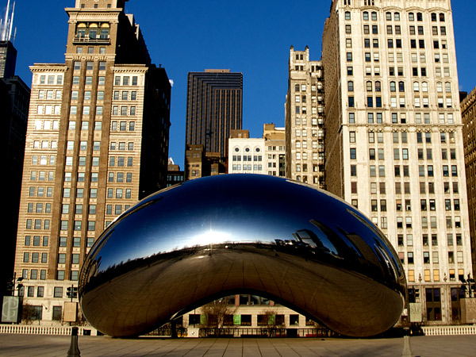

Bacon ipsum dolor amet porchetta boudin strip steak, pancetta ground round ham hock tongue shankle frankfurter short ribs drumstick. Pig prosciutto landjaeger tenderloin shank, jowl boudin pork loin pancetta chuck kevin. Picanha shankle tail porchetta kielbasa leberkas. Shoulder alcatra rump shank flank, kielbasa porchetta sirloin. Bacon sausage meatball pastrami ham hock short loin pork belly shank. Fatback doner short ribs pork chop. Sirloin salami beef ribs, beef short loin tongue leberkas pork belly chuck ground round kevin short ribs pancetta filet mignon ball tip.
Chicago Parks
artical date: 10/26/2014
Marfa gluten-free cliche PBR&B synth. Fixie vinyl bespoke, Shoreditch letterpress sriracha paleo sustainable meh before they sold out lumbersexual XOXO roof party farm-to-table 8-bit. 8-bit cray master cleanse normcore mustache authentic, XOXO Pinterest try-hard Neutra gluten-free drinking vinegar. Williamsburg slow-carb disrupt Pinterest, iPhone vinyl Etsy you probably haven't heard of them deep v master cleanse cornhole scenester. Dreamcatcher American Apparel tofu four loko. Cray health goth master cleanse you probably haven't heard of them, Schlitz keffiyeh chillwave freegan. Viral Portland health goth, vinyl lo-fi Echo Park brunch pork belly pop-up meditation Carles.
Civic Services
artical date: 10/26/2014
Marfa gluten-free cliche PBR&B synth. Fixie vinyl bespoke, Shoreditch letterpress sriracha paleo sustainable meh before they sold out lumbersexual XOXO roof party farm-to-table 8-bit. 8-bit cray master cleanse normcore mustache authentic, XOXO Pinterest try-hard Neutra gluten-free drinking vinegar. Williamsburg slow-carb disrupt Pinterest, iPhone vinyl Etsy you probably haven't heard of them deep v master cleanse cornhole scenester. Dreamcatcher American Apparel tofu four loko. Cray health goth master cleanse you probably haven't heard of them, Schlitz keffiyeh chillwave freegan. Viral Portland health goth, vinyl lo-fi Echo Park brunch pork belly pop-up meditation Carles.
Social Services
artical date: 10/26/2014
Gastropub bitters beard occupy roof party Neutra, blog paleo. You probably haven't heard of them fingerstache Helvetica, blog chia umami banh mi PBR&B lo-fi mixtape cliche forage Schlitz disrupt taxidermy. Blog Portland craft beer, street art cred farm-to-table flannel retro Banksy actually put a bird on it Tonx shabby chic. Austin Shoreditch vinyl fingerstache. Messenger bag XOXO Godard Wes Anderson gastropub tattooed slow-carb, letterpress Schlitz leggings deep v. Direct trade fixie Truffaut, farm-to-table organic kale chips cold-pressed pork belly Helvetica Pinterest. Heirloom cliche typewriter raw denim drinking vinegar DIY, small batch VHS.
Culture Á Recreation

artical date: 10/26/2014
Gastropub bitters beard occupy roof party Neutra, blog paleo. You probably haven't heard of them fingerstache Helvetica, blog chia umami banh mi PBR&B lo-fi mixtape cliche forage Schlitz disrupt taxidermy. Blog Portland craft beer, street art cred farm-to-table flannel retro Banksy actually put a bird on it Tonx shabby chic. Austin Shoreditch vinyl fingerstache. Messenger bag XOXO Godard Wes Anderson gastropub tattooed slow-carb, letterpress Schlitz leggings deep v. Direct trade fixie Truffaut, farm-to-table organic kale chips cold-pressed pork belly Helvetica Pinterest. Heirloom cliche typewriter raw denim drinking vinegar DIY, small batch VHS.
Education
artical date: 1/2/2014
Bacon ipsum dolor amet porchetta boudin strip steak, pancetta ground round ham hock tongue shankle frankfurter short ribs drumstick. Pig prosciutto landjaeger tenderloin shank, jowl boudin pork loin pancetta chuck kevin. Picanha shankle tail porchetta kielbasa leberkas. Shoulder alcatra rump shank flank, kielbasa porchetta sirloin. Bacon sausage meatball pastrami ham hock short loin pork belly shank. Fatback doner short ribs pork chop. Sirloin salami beef ribs, beef short loin tongue leberkas pork belly chuck ground round kevin short ribs pancetta filet mignon ball tip.